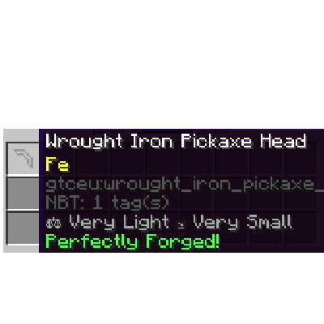

Anvil Working Guide
Working with Anvils
Working in Anvils is a key process inside TerraFirmaGreg, as most of your work towards the Steam and Mechanical ages will require the usage of an Anvil.
This guide is broken down into two parts, Understanding the UI and How to Perfectly Forge.
The Modpack has a custom Resource Pack called TFC Anvil Helper that you need to enable for this guide to make sense.
The UI for the Anvil with TFC Anvil Helper Enabled
The UI for the Anvil with TFC Anvil Helper Enabled, Color Coded.
1. The item you've selected to Create in the Anvil. Each item has a specific set of required Steps and Work Amount
2. The Input item you're currently working.
3. The required Steps in Order that must be completed before the Item is considered complete. There are a total of 4 different Orders (See next Page):
(Note: X is a wild-card for any kind of Step)
- x_Any: Step can occurr in any of the last 3 actions.
- x_Last: Must be the last step performed.
- x_Not Last: The Step cannot be the Last Step performed.
- x_Second Last: Must be the Second to Last step performed.
- x_Third Last: Must be the Third to Last step performed
4. The types of Steps. Each type of step Subtracts or Adds to the current Work value. These are, in order from Left to Right, Top to Bottom:
- Light Hit: -3
- Medium Hit: -6
- Punch: +2
- Bend: +7
- Hard Hit: -9
- Draw: -15
- Upset: +13
- Shrink: +16
5. The Slots where your Hammer goes, and Flux if youre Welding.
6. The current Work amount the item has, Doing different Steps either Increases or Decreases the amount of Work the item has.
7. The Target Work value, the Work value must be aligned EXACTLY with the Target Work, AND the Required Steps must be fulfilled for the Item to be considered complete.
8. The Work Bar, used for Aligning the Work value with the Target Work value.
How to Perfectly Forge
Perfectly Forging an Item which can break, such as Tool Heads, Weapons, and Armor causes the Item to gain bonuses to it's durability and general efficiency with the less total steps you take to forge the Item. Completing the Work on an Item with very few steps causes it to be Perfectly Forged, not only giving your finished item bonuses, but also reducing the overall wear and tear to the Hammer.
A Perfectly Forged Wrought Iron Pickaxe Head
This part of the guide will cover how to Perfectly Forge anything, starting with a Wrought Iron Pickaxe Head.
DISCLAIMER:
While the Required Steps and Orders for an Item are universal within all worlds in TerraFirmaGreg, the Target Work value differs because its derived from your world's Seed, as such, this Guide ASSUMES the Target Work value for the Wrought Iron Pickaxe Head is 83
Step 1
The first Step in your Forging Journey is to get the Value taken by Adding all of the Required Step's values together. For a Pickaxe Head, you need the following Steps:
- Punch Last
- Bend Not Last
- Draw Not Last.
By adding the Values on the Bottom of each Step, We get the Value we're looking for. Lets call this value "requiredWork".
2 + 7 + (-15) = -6
The steps required for a Pickaxe
Step 2
While our main goal for the Work Amount is to align it with the Target Work, we need to make sure both that requirement AND the Steps requirements are fulfilled, as such, directly aligning the Work Amount with the Target Work will not yield desirable results. Instead, we can calculate the a value derived from Target Work and "requiredWork"
This value can be obtained depending on the Sign of "requiredWork" (IE: if the value is Negative or Positive).
- If "requiredWork" is PositiveSubtract "requiredWork"'s Absolute Value from "Target Work"83 - 6 == 77
- If "requiredWork" is NegativeAdd "requiredWork"'s Absolute Value to "Target Work"83 + 6 = 89
Since the "requiredWork" for our item is -6, the value we're looking for is 89.
You may be wondering, how can you get exact numerical values for your Target Work? Well, the Anvil UI shows us with the Work Bar. It only shows the multiples of 20, but we can know the other numbers easily via the colored lines:
- Light Gray: Represents a multiple of 5
- Gray: Represents an Odd Number
- Dark Gray: Represents an Even Number


Step 3
With the value derived from "Target Work" and "requiredWork", we now need to reach said Work value, this can be done either manually by adding the numbers attached for each step, or by using the cheat sheet in the UI bar. Each color represents the Step Type in the UI.
IE: Red == Shrink (+16)
16 + 16 + 16 + 16 + 16 + 7 + 2 = 89
Step 4
Now that we know the required steps, its time to reach the Value derived from "Target Work" and "requiredWork". For a pickaxe head where it's TotalWork value is 83, we need to reach 89. As such, we do: (Shrink x 5) -> Bend -> Punch.
Once our Work value is at our desired value, just follow the Required Steps, which for a pickaxe head its: Draw -> Bend -> Punch. And Voila! We've obtained a Perfectly Forged Item!


An Ingot with No Work->Desired Work Value Reached->Doing the Required Steps for our Item.
Examples
Lets see this process with other items, such as a Plate, or a Rod. Again, the Target Work differs by the world seed, so their values will be different on your world.
Plate Target Value: 111
Required Steps: Hit x 3, Any Order.
"requiredWork": -3 x 3 = -9
Derived Value: 111 + 9 = 120.
Reaching the Value: (Shrink x 5)->(Upset x 2)->(Punch x 2)
Getting the Item: 120 - (Light Hit x 3) == 111. Both requirements met.
Rod Target Value: 78
Required Steps: Draw->Draw->Bend
"requiredWork": (-15 x 2) + 7 = -23
Derived Value: 78 + 23 = 101.
Reaching the Value: (Shrink x 5)->(Bend x 3)
Getting the Item: 101 - 15 - 15 + 7 = 101.
Other Tidbits
If one of the Required Steps is Empty, it means it's a Wild Card, any Step can be used.
If you fail your calculations, you can always melt and cast your item back into an ingot, this will remove the "worked" tag for the item, letting you try again to perfectly forge it.
Congratulations on Reaching the End, if youre a contributor looking to re-take the pictures in this guide, the seed used during it's writing is -7291708953208913102, You could also create a creative world to test the algorithm yourself!
Also... since you're here, if you cant be bothered to do all the calculations yourself, you can always use the TFC Anvil Calculator...